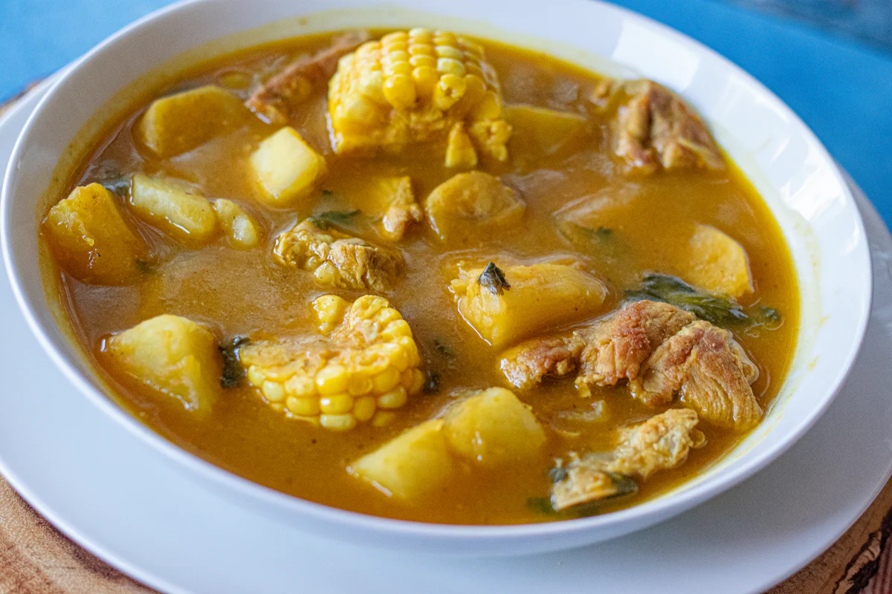
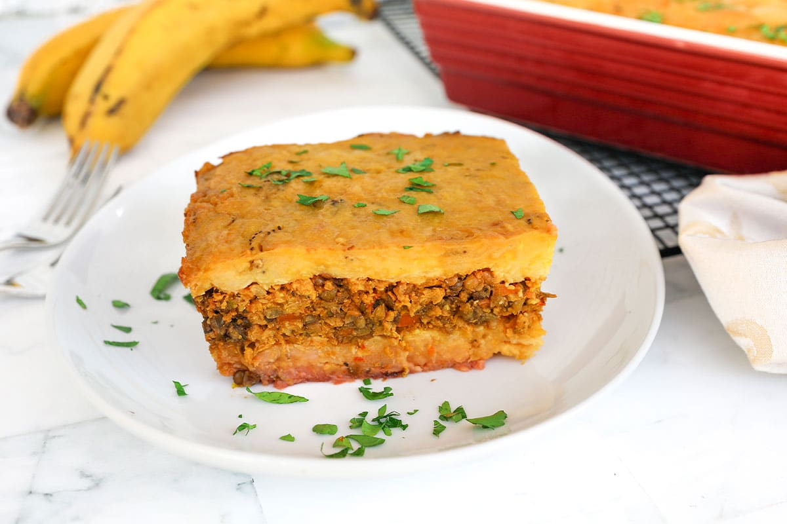
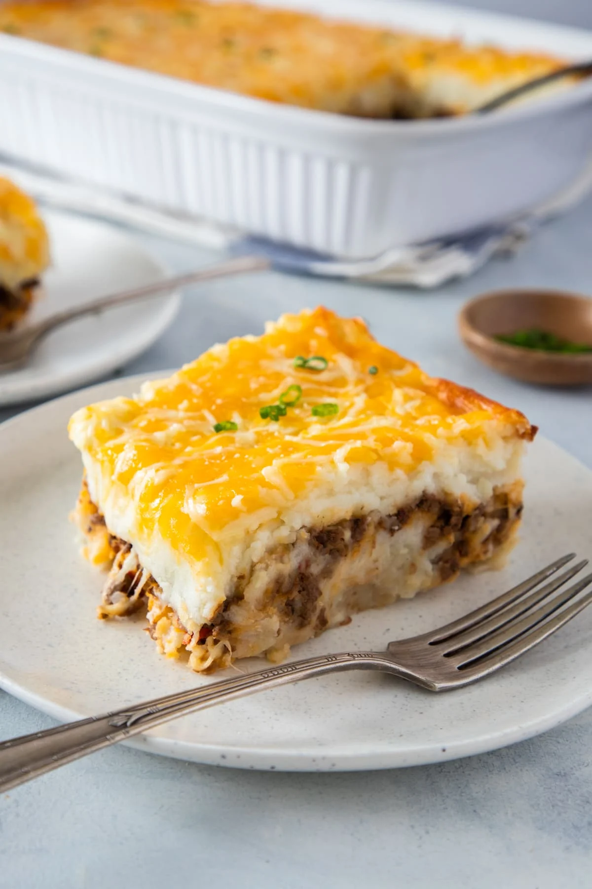
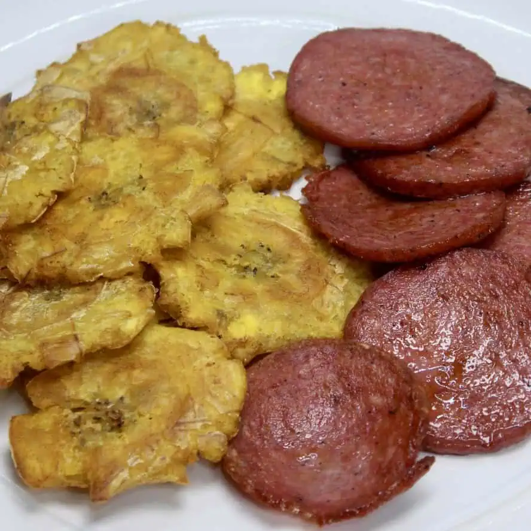
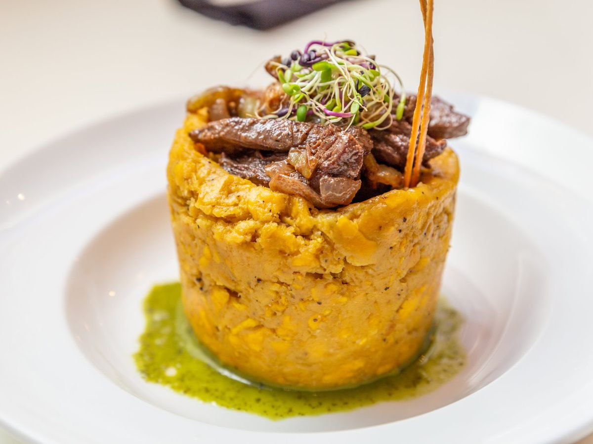

Sancocho
A rich stew made with a variety of meats, root vegetables, and spices, served hot with rice and avocado.
Pastelón de Plátano Maduro
Layered sweet plantains with seasoned ground beef and cheese, baked to golden perfection.
Pastelón de Papa
Savory casserole of mashed potatoes, seasoned ground beef, and melted cheese.
Tostones con Salami
Twice fried plantain slices served with fired Salami.
Mofongo
Mashed green plantains with garlic and pork rinds, often served with shrimp, chicken, or broth.
